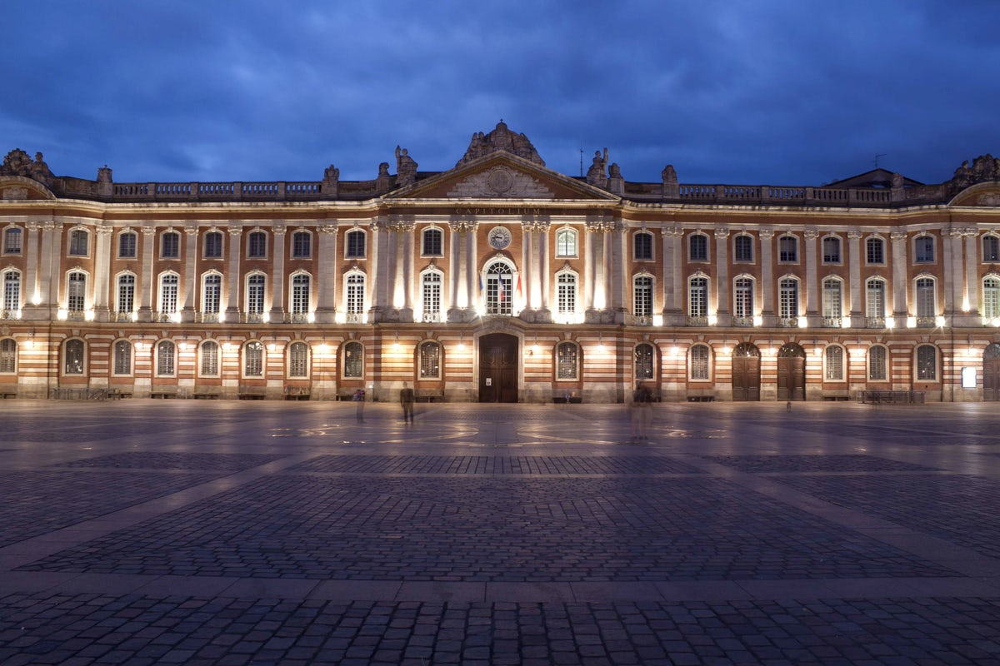
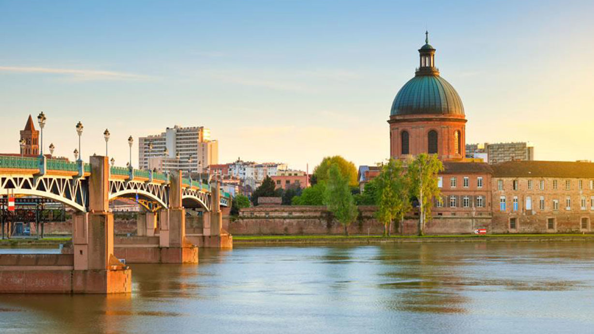

Lieu d’intérêt emblématique de la ville, la place est située en plein centre historique de Toulouse. Petite particularité, cette immense place (12 000 m² tout de même!) ne possède aucune construction. Elle est uniquement réservée aux piétons et accueille un grand marché quotidien. Sur le sol de la place, vous pourrez admirer le symbole de Toulouse, la croix occitane. Dessinée par Raymond Moretti, elle représente les 12 signes du zodiaque ainsi que les 12 mois de l’année et les 12 heures du jour. Il a également réalisé la galerie des Arcades, un ensemble de 29 tableaux évoquant chacun une période de l’histoire de Toulouse et de ses alentours. La galerie est également située sur la place.
Le lieu est un tout nouvel espace muséographique permettant de découvrir l’histoire des pionniers de l’aéropostale. Le parcours présente des accessoires de pilote, des maquettes d’avions et est en plus super interactif avec un simulateur de vol et des acteurs en tenues de pilote/mécanicien qui vous raconteront leurs métiers.

Autre indispensable à faire à Toulouse : une balade le long de la Garonne. Depuis les quais, vous allez pouvoir admirer les plus belles vues de Toulouse. Ne manquez pas le Pont Neuf ou encore le Dôme de la Grave. L’été, en semaine comme le week-end, les quais sont très prisés par les Toulousains
